← Laufstrecken
Tschiertschen Valbella
Wegname:
Tschiertschen_Valbella
Streckenart:
Laufstrecke
Kategorie:
Berglauf
Region:
GR Mitte
Streckenlänge:
17 Km
Hm +:
900 hm
Hm -:
1000 hm
Datum:
31.05.25
Kurzbeschrieb:
Tschiertschen - Furgglis - Joch - Chötzenberg - Scharmoin - Parpan
Link SchweizMobil:
Bild SchweizMobil:
Bericht:
Nach längerer Trainingspause kann ich endlich wieder einigermassen schmerzfrei rennen. Es ist das erste grösserer Lauftraining seit längerem. Eine sogenannte Bewährungsprobe. Wir treffen uns am Postautodeck in Chur. Es ist der erste schönere Tag seit längerem und die Sonne heizt schon frühmorgens richtig ein. So reicht bereits morgens eine kurze Hose und ein T-Shirt. Das Postauto bringt uns pünktlich an den Ausgangspunkt nach Tschiertschen. Marcos Streckenplanung liess Gnade walten, so dass auch die jüngeren Familienväter mit entsprechendem Trainingsrückstand noch einigermassen Schritt halten konnten. Bereits nach kürzester Zeit schrauben wir uns Schritt für Schritt in die Höhe. Das Schnappen nach Luft wird häufiger und ich merke bereits wie meine Oberschenkel leicht zu brennen beginnen. Ja ein leichtes Trainingsmanko macht sich hier bei mir bereits bemerkbar. Vorbei am Bergrestaurant Furgglis und weiter über sanfte Trampelpfade zum Bergrestaurant Hühnerköpfe. Ein wunderschöner Trail begleitet uns hinüber zum Joch. Teils noch etwas mit Schnee bedeckt, erreichen wir alle wohlbehalten das Joch. Wir halten kurz inne und verpflegen kurz, bevor es über die frisch gestampfte Kiesstrasse hinunter geht. Die Strecke ist vielen vom Neujahrstraining aufs Churer Joch bestens bekannt. Nach einer kurzen Verschnaufpause geht es auch schon wieder steil bergauf zum Chötzaberg Obersäss. Dort beschliessen wir nicht den direkten Abstieg nach Parpan zu nehmen, sondern via Scharmoin zur Rothornbahn in der Lenzerheide zu laufen. Corina, Peter und Petra nehmen die Bahn ab Scharmoin ins Tal. Die restlichen Läufer suchen sich den Weg zwischen den Biker ins Tal. Diese sind zwar etwas schneller müssen sich aber unten an der Talstation, für die Bergfahrt auf eine etwas längere Geduldsprobe einstellen. Es ist doch einiges los hier. Wir gönnen uns zum Abschluss der Tour noch etwas zu Trinken und einen kleinen Happen, bevor wir mit dem Postauto gemütlich zurück nach Chur fahren.
Vielen Dank Marco und Petra fürs Organisieren der Strecke. Ich war gerne dabei, auch wenn der Muskelkater ausgeblieben ist, freue mich wieder extrem, mehr Zeit auf den Trails verbringen zu dürfen. Gerne wieder…..
Autor:
Dani Z.
Teilnehmer:
Petra, Marco, Peter, Bea, Isabella, Martin, Ruedi, Donat, Corina, Silvia, Markus Dani Z.
Galerie:
-
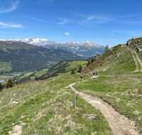
-
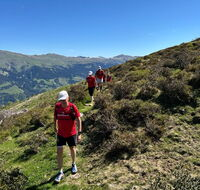
-
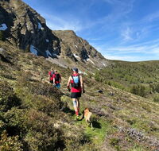
-
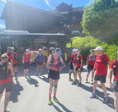
-
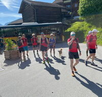
-
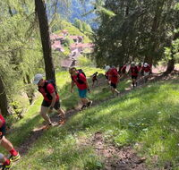
-
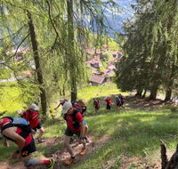
-
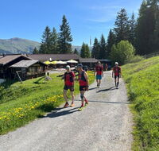
-
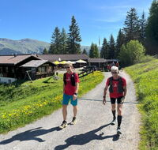
-
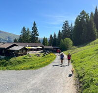
-
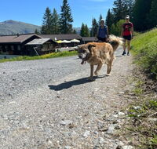
-
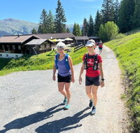
-
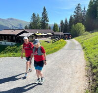
-
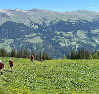
-
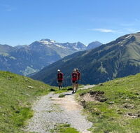
-
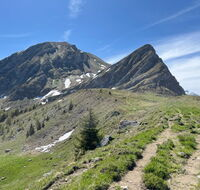
-
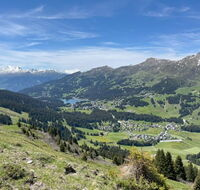
-
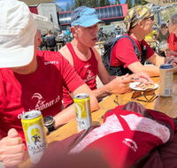
-
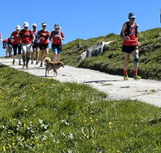
-
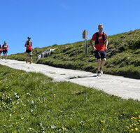
-
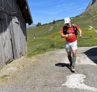
-
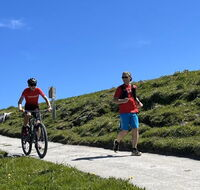
-
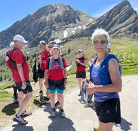
-
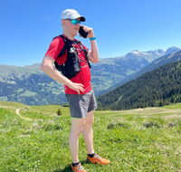
-
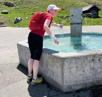
-
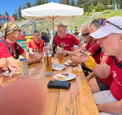